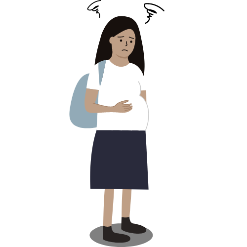

A gravidez na adolescência é considerada de alto risco para as meninas, podendo acarretar diversos problemas de saúde como hipertensão e anemia, além de episódios de morbimortalidade, quando a adolescente vem a óbito na gravidez ou no parto. Existem alguns métodos preventivos para não ter casos de gravidez na adolescência, até porque nenhum adolescente tem condições de criar um filho atualmente. Os adolescentes precisariam de muita ajuda da sua família para poder criar um filho, então devemos ter consciência de que o nosso corpo deve ser preservado para não ocorrer algo mais sério.

Além dos riscos físicos, a gravidez na adolescência pode impactar significativamente o desenvolvimento emocional e psicológico das jovens mães. A pressão para equilibrar responsabilidades parentais com os estudos e atividades sociais pode gerar estresse e sentimentos de inadequação. Muitos adolescentes enfrentam dificuldades para retomar sua educação e, como resultado, enfrentam barreiras para alcançar oportunidades de emprego no futuro. Isso pode perpetuar ciclos de desigualdade e limitar as perspectivas de uma vida melhor.
A prevenção é crucial e envolve não apenas a educação sobre métodos contraceptivos, mas também a promoção de uma abordagem aberta e honesta sobre sexualidade e relacionamentos. Programas educativos e familiares desempenham um papel fundamental na disseminação de informações e no suporte aos jovens. É importante que as escolas e as comunidades forneçam recursos e apoio para que os adolescentes possam tomar decisões informadas sobre sua saúde e futuro.
Além disso, o suporte psicológico e social deve ser parte integrante das estratégias de prevenção. Oferecer orientação e apoio emocional pode ajudar os adolescentes a lidar com pressões e escolhas difíceis, reduzindo a probabilidade de gravidez precoce. A colaboração entre famílias, escolas e profissionais de saúde é essencial para criar um ambiente onde os jovens se sintam capacitados e bem informados para fazer escolhas responsáveis sobre sua sexualidade e suas vidas.
Além disso, o suporte psicológico e social deve ser parte integrante das estratégias de prevenção. Oferecer orientação e apoio emocional pode ajudar os adolescentes a lidar com pressões e escolhas difíceis, reduzindo a probabilidade de gravidez precoce. A colaboração entre famílias, escolas e profissionais de saúde é essencial para criar um ambiente onde os jovens se sintam capacitados e bem informados para fazer escolhas responsáveis sobre sua sexualidade e suas vidas.